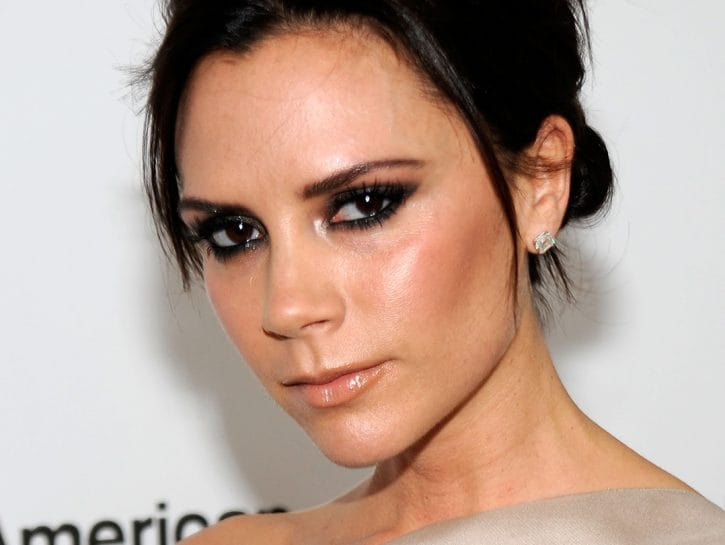
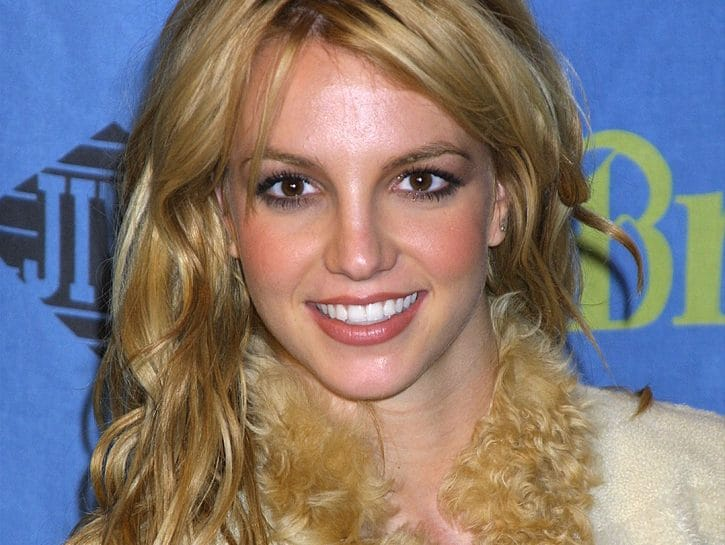

IL MAKE UP DAL 1970 AL 2000
Non solo cinema, l'avvento della musica rock e pop, della televisione e della pubblicità cambiò drasticamente il concetto estetico femminile e, di conseguenza, le mode e le tendenze risultano in un caleidoscopio di varietà .
Gli anni '70 furono caratterizzati dal gusto hippie, con poco trucco e capelli protagonisti, gli anni '80, con l'avvento della disco dance, cominciano a richiedere texture brillanti, vistose e metallizzate. Durante gli anni '90 e 2000, invece, gusti estremi e misture di stili si amalgamano e si poteva passare dal trucco/non trucco con pelle abbronzata sino al makeup dark e di ispirazione gotica.
Sapevi che...?
Britney Spears, pop star americana idolo delle ragazze negli anni 2000, ha gli occhi che tendono all'ingiù e la cantante, per questo motivo, ha da sempre prediletto smokey eyes piuttosto intensi e sfumati verso l'alto proprio per questo motivo.
Victoria Beckham, ex cantante delle Spice Girls, è ossessionata dalla skincare e ammette di spendere cifre da capogiro anche per una sola crema. Inoltre, ha ammesso di non essere una grande amante dei rossetti: preferisce concentrare l'attenzione sugli occhi e indossare un gloss o un rossetto nude.

